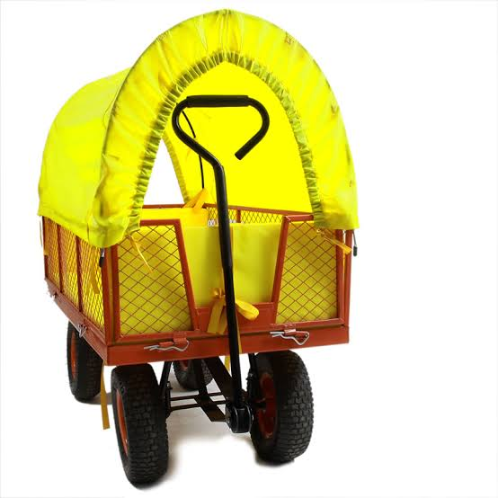

OUR TROLLEYS
Built for the journey.
Ready for the festival.
Practical, reliable trolleys designed to make the journey from the car park to the campsite easier for festivalgoers.

THE RIGHT TOOL FOR THE JOB
Simple to use. Built for festival life.
A festival trolley needs to be practical above all else. Our fleet is designed around the realities of festival arrivals — carrying bulky loads, travelling across uneven ground and being used by festivalgoers throughout a busy weekend.
The result is a straightforward piece of equipment that does exactly what it needs to do: make getting from the car to the campsite easier.
Practical capacity
Plenty of space for camping equipment, luggage and festival essentials.
Easy to manoeuvre
Designed to make moving belongings across a festival site as straightforward as possible.
Festival ready
Prepared and checked before deployment to help keep the fleet reliable throughout the event.
Planning trolley hire for your festival?
We work with festival organisers to provide a reliable trolley operation that fits naturally into the wider event.
Talk to Jolly Trolley